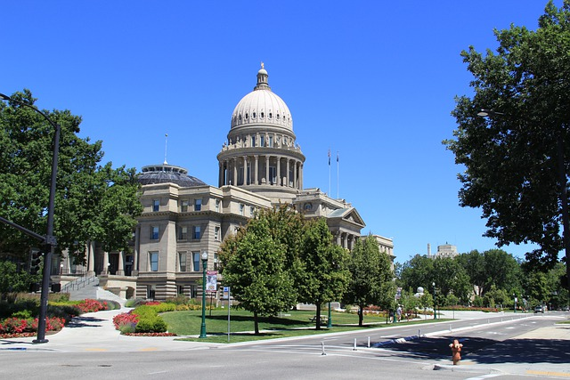
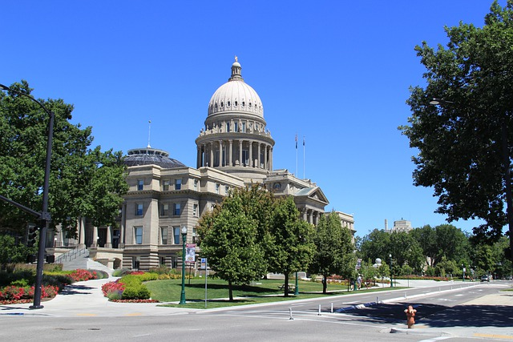

Population: 226,115
BOISE, Idaho (AP) — If Idaho is feeling growing pains, newly released data from the 2020 Census illustrates why. The states population grew by 17.3% over the past 10 years — second only to Utah, which saw an 18.4% percent change in population. Much of that growth was concentrated around the southwestern Idaho cities of Boise and Nampa, with Ada County growing by 26%. The Ada County city of Meridian, meanwhile, became one of the 10 fastest-growing cities in the U.S., jumping from just over 75,000 people in 2010 to more than 117,600 residents in 2020. The fast-growing population has contributed to a housing crunch that is reflected in the census data. While Idahos 10% home vacancy rate was close to the national average, would-be new residents can expect to struggle to find a place to live in southwestern Idaho, with Canyon County’s vacancy rate at a low 3.9%. Gem, Ada and Payette counties also had low vacancy rates at 4.8%. Census: Meridian, Idaho, one of 10 fastest-growing US cities By REBECCA BOONE August 12, 2021
 

Welcome to Boise!
Boise, Idaho is grounded in our commitment to fostering a community that welcomes all, protects our open space and clean water and offers opportunity for everyone. Part of Boise’s attraction (and our powerful retention) is the way new people, ideas and efforts take root and thrive here. This “anything’s possible” feeling means our future of found-nowhere-else opportunities could be written by the best and brightest talent like you. Boise's stellar quality of life includes a vibrant downtown, cultural and culinary experiences, unique attractions and access to outdoor recreation and the Boise River. When you get here, you'll enjoy a thoroughly walkable, friendly and safe city to explore. The ROSE Awards honor employees in the tourism and hospitality industry who positively enhance a visitor’s experience during their stay in the Boise area. The Awards cover several categories and are presented to employees who distinguish themselves through enthusiasm and exemplary service.